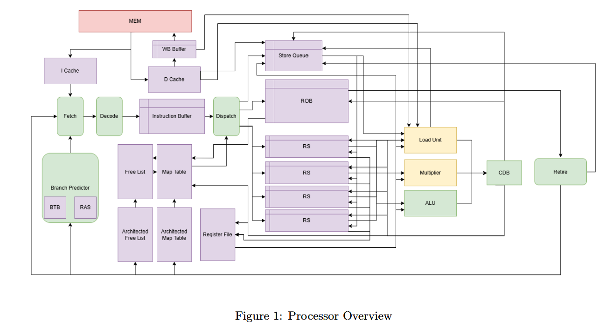
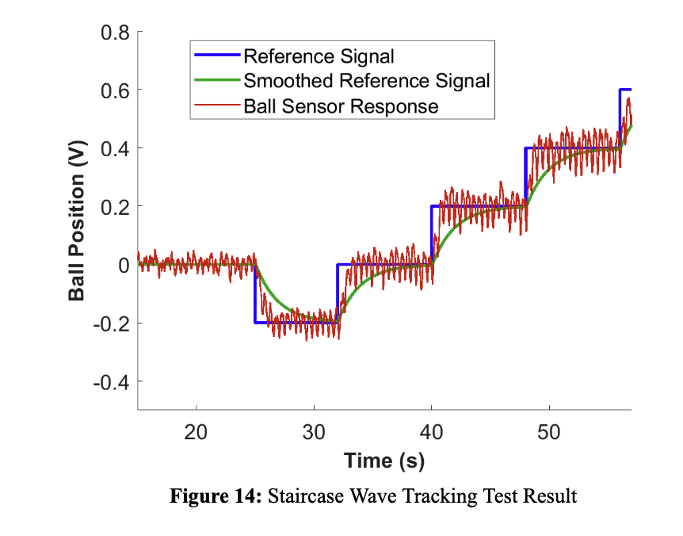
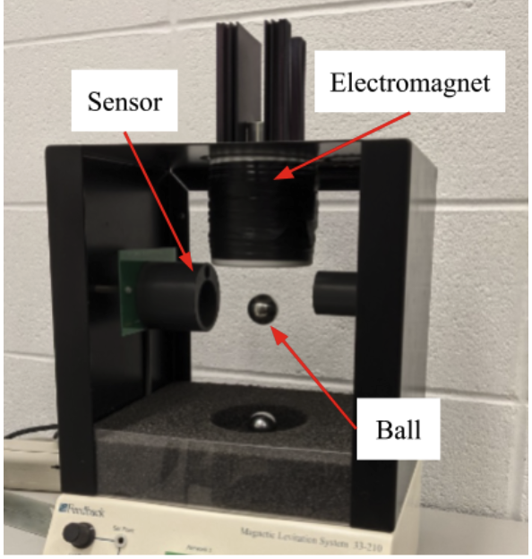

Out-of-Order RISC-V Processor (SystemVerilog)
EECS 470: Computer Architecture Senior Design | Fall 2025
Collaborated on a 5-person team to design and implement a fully synthesizable, N-way superscalar R10K-style out-of-order processor for the RISC-V ISA. My primary contributions included the development and optimization of the Branch Predictor, Free List, Return Address Stack (RAS), as well as testbenching and debugging.
Key Architectural Features:
- N-way Superscalar Execution: Parameterized design allowing multiple instructions to be fetched, issued, and retired per cycle. Configured to N=3, with a 16-entry ROB and 2 ALUs, achieving an optimal CPI at an 11.12ns clock period.
- Palacharla Reservation Station: Implemented dependency-based FIFO queues to improve issue logic speed and scalability.
- Advanced Branch Prediction: Integrated a Tournament Predictor (dynamically selecting between GShare and a per-PC history predictor) alongside a BTB and a 16-entry Return Address Stack (RAS).
- Early Tag Broadcast: Reduced the wakeup critical path by broadcasting destination tags one cycle before value generation, allowing overlapped wakeup and execution.
- Memory Hierarchy: Developed non-blocking, multi-banked instruction and data caches utilizing a pseudo-LRU eviction policy, paired with a writeback buffer, out-of-order load issues, and byte-level store-to-load forwarding.

High-level overview of the processor data flow.
Magnetic Levitation (Maglev) PID Controller Design
EECS 460: Control Systems Analysis and Design | Winter 2025
Designed and implemented a robust control system to levitate a magnetic ball using a linearized model of a nonlinear plant. This project involved theoretical modeling, simulation in MATLAB, and final validation on physical hardware.
Key Highlights:
- Modeling & Linearization: Linearized the equation of motion of a maglev system about an equilibrium current to enable PID control design.
- 2-DOF Controller Architecture: Implemented a reference pre-compensator to cancel the zeros of the PID transfer function. Hardware testing demonstrated a rapid settling time of under 3 seconds and zero steady-state error.
- Stability & Robustness: Analyzed stability margins (Gain Margin: 0.4493, Phase Margin: 82.76°) to ensure reliability. Physically validated the system's ability to reject external disturbances and track staircase/square wave reference changes.
- Hardware-in-the-Loop Validation: Successfully stabilized the system on the first attempt, demonstrating a strong correlation between the dominant pole approximation used in design and the physical hardware plant.

Staircase Wave Tracking Test Result, demonstrating rapid settling and accurate tracking.

Experimental setup: Electromagnet, magnetic ball, and position sensor.